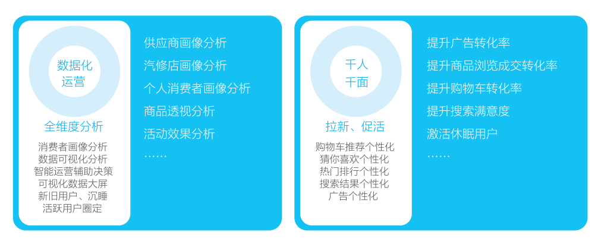
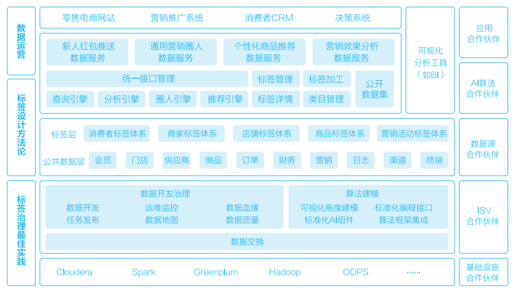
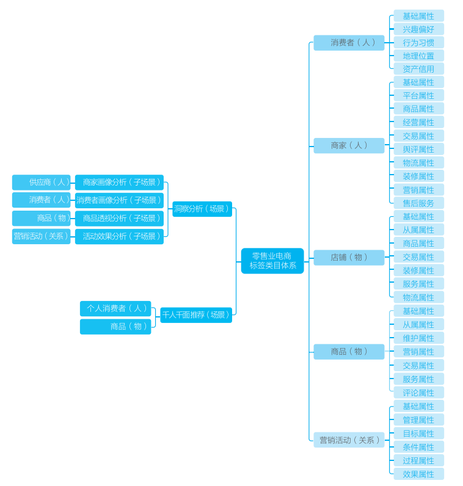
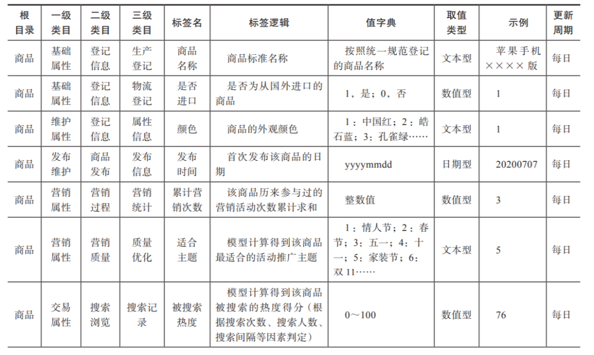
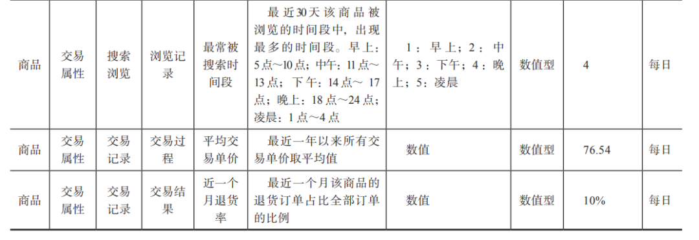

零售业电商标签从0到1的构建方法
导读：本文手把手教大家构建一套完整的零售行业标签类目体系。
背景
D电商是一家零售电子商务公司，布局了集线上交易、线下物流、金融、社区于一体的生态链路，拥有该细分行业内领先的全品类一站式交易平台。
近年来电商主营业务发展进入瓶颈期，固定的商品展现模式已不能满足市场需求，具体表现在以下几点。
广告位置与营销活动需要大量运营人员维护更新，耗时耗力。
营销缺乏精准画像、数据支撑。营销成本高但利润回报小，中小商家经营困难，营销质量和效率亟待提升。
平台侧沉淀了大量的业务数据，但无法转化为有效资产，为业务和商家带来真正的商业价值。
针对以上问题，D电商公司在CEO带队学习完数据中台相关理念后，迅速制订了建设零售数据中台的战略计划：埋点采集用户行为数据、规范各端数据录入规范，构建一套完整的零售行业标签类目体系，最终作用于数据化运营与千人千面推荐场景中，以实现精准分析下的决策判断，从而增强用户黏性，提升商业转化效率，如图1所示。

图1 数据应用场景：数据化运营和千人千面
项目组设计的零售数据中台主要基于通用的数据中台架构，同时加入行业特有的“人—货—场”概念与D电商业务的自有需求，构建了零售业数据资产体系。
D电商数据资产架构基本遵循数据中台“平台底座、资产核心、上层应用”的三层通用结构，但在资产层与服务应用层中，具体建设内容具有零售行业特性，如图2所示。

图2 D电商数据资产架构图
零售业电商的后台标签类目体系一般由“消费者（人）”“商家（人）”“店铺（物）”“商品（物）”“营销活动（关系）”等核心对象标签类目体系组成。这些数据资产往往可以通过查询、分析、圈人、推荐等数据服务引擎配置成数据服务接口嵌入现有业务系统中，或直接生成带交互界面的数据应用系统供业务人员或终端用户使用，最终形成前台标签类目体系结构，如图3所示。

图3 零售业电商标签类目体系架构图
“消费者（人）”标签类目体系下分为【基础属性】【兴趣偏好】【行为习惯】【地理位置】【资产信用】等5大一级类目，共计200多个标签。
“商家（人）”标签类目体系下分为【基础属性】【平台属性】【商品属性】【经营属性】【交易属性】【舆评属性】【物流属性】【装修属性】【营销属性】【售后服务】等10大一级类目，共计300多个标签。
“店铺（物）”标签类目体系下分为【基础属性】【从属属性】【商品属性】【交易属性】【装修属性】【服务属性】【物流属性】等7大一级类目，共计150多个标签。
“商品（物）”标签类目体系下分为【基础属性】【从属属性】【发布属性】【营销属性】【交易属性】【服务属性】【评论属性】等7大一级类目，共计200多个标签。具体标签设计脱敏示例如下表所示。
表 商品标签设计示例


“营销活动（关系）”标签类目体系下分为【基础属性】【管理属性】【发布属性】【营销属性】【交易属性】【服务属性】【评论属性】等7大一级类目，共计约150多个标签。
以上标签类目体系组成了零售业电商公司在营销侧的基本数据资产体系，通过合理便捷地使用这些对象标签，可以快速实现营销端的数据创新。
D电商选择从洞察分析和千人千面入手，展开数字营销尝试：一方面解决企业当前最大的营收难题，另一方面营销端天然与数字有关，最容易反应数据质量与数据价值。洞察分析可以细分为商家画像分析、消费者画像分析、商品透视分析、活动效果分析等，因此前台类目分别与“商家（人）”“消费者（人）”“商品（物）”“营销活动（关系）”这几类对象下的相关标签有关。千人千面主要涉及对每一个消费者对象给予精准的个性化推荐结果，因此千人千面的场景会用到“消费者（人）”和“商品（物）”对象的标签子集。


Flink CDC我吃定了耶稣也留不住他！| Flink CDC线上问题小盘点
4万字长文 | ClickHouse基础&实践&调优全视角解析